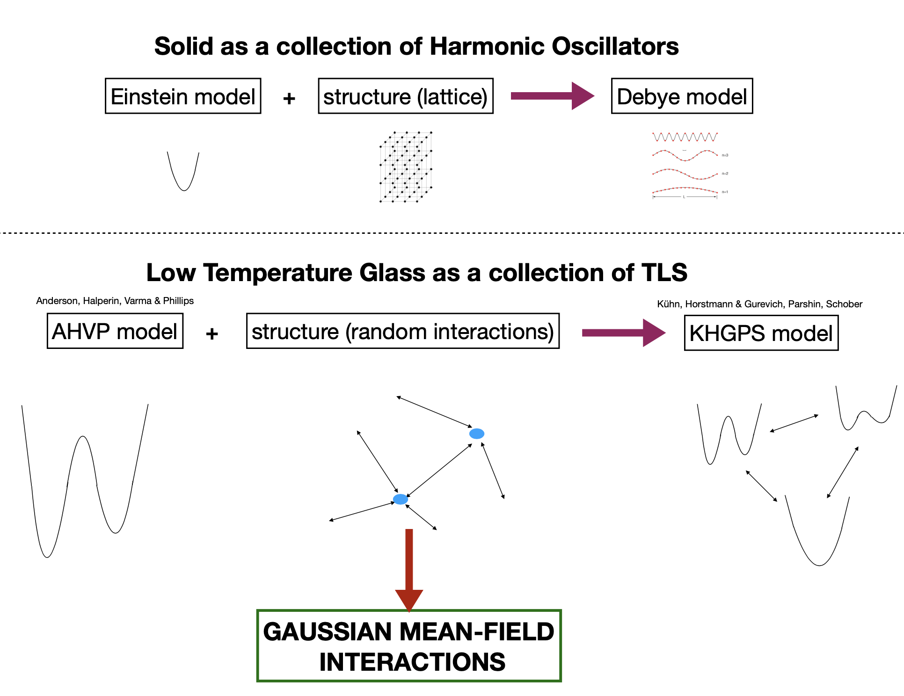

Low-temperature anomalies in glasses can be traced to rare, strongly anharmonic excitations. Soft anharmonic mean-field spin glasses connect linear excitations to nonlinear two-level systems, offering a controlled route to understanding tunneling-like defects in amorphous solids.
